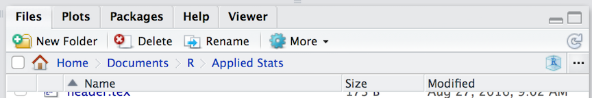

5 Data Import & Export
Raw data is imported into R using read.* functions. There are a wide variety of file formats available, most of which have a corresponding function (e.g., read.csv(), read.delim(), read.dcf(), etc.). For our purposes, we will focus on using comma separated files (*.CSV) as they are the most readily available and can be read by almost all editors and spreadsheet functions.
On the lecture webpage, there is a file named iris.csv. Download this file and put it in the same directory as your RStudio session. If you do not know where this is, you can find it by asking R to get its current working directory as:
getwd()## [1] "/Users/rodney/Documents/R/AppliedEnvironmentalStatistics"The same information is also printed across the top of the “Files” pane in the RStudio interface (though it starts from your ‘home’ directory instead of the top of the file path).

One way to easily open this location is to select the “Show Folder in New Window” menu item in the “More” menu on that same pane. It will open the folder you are looking at in the file system as a new window for you, then you can drag and drop things into it.

Keep in mind that R is running in a specific location on your computer. This working directory is where it looks for stuff if you do not give a complete file path (e.g., ‘C:\Users...’ or ‘/Users/…’ on winblows and mac, respectively). To load in a CSV file, we can use the function
data <- read.csv("file.csv")where at a bare minimum, we need to have the name of the file (in the example above it was ‘file.csv’). There are a lot of additional arguments you can pass to read.csv() including:
header = TRUE: Does the file have a header row that gives the variable names?sep = ",": What is the column separator. By default for CSV, it is a comma.quote = "\"": Is there text that is quoted within the body of the document?dec = ".": What is the decimal character?fill = TRUE: Do you want to fill in the empty data cells or do all rows of data have the same amount of data.comment.char = "": Are there comments in the text?
Additional options are available if you look at the help file as:
?read.csvOnce you have read the file in (it will complain with an error message if it does not work), then you will have a data.frame object named data (from the example above, you should of course name it something more descriptive).
\(\;\)
Saving materials in R is a bit easier. If you are needing to export the file back into a CSV format then you can use write.csv() (see ?write.csv for specifics and examples) and it will write the file as a text file. However, if you are only working in R with that file, you can save it as an R object without translating it back and forth through a CSV file. Using the example data from above, you could save the data.frame as an R data object using:
save( data, file="mydata.rda")and it will save the object. Next time you need it, you can load it in using:
load("mydata.rda")